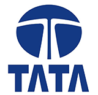
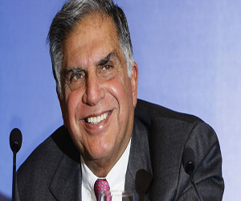
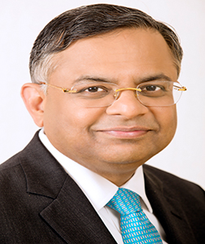
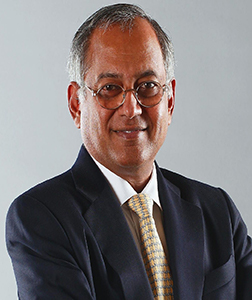
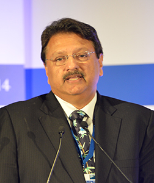
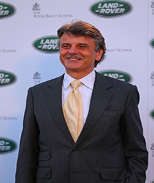

<!doctype html>
<html>

<head>
    <meta charset="utf-8">
    <title>A3 - tata's Responsive Website | About tata's| Deals of the week
        <title>
            <meta name="viewport" content="width=device-width, initial-scale=1.0">
            <link href="css/custom.css" rel="stylesheet">

            <!-- Bootstrap -->
            <link href="css/bootstrap.css" rel="stylesheet">
            <script src="js/respond.js"></script>
</head>

<body class="container">
    <!-- row 1 -->
    <header class="row">
        <div class="col-sm-5 col-lg-6">

            <a href="#"></a>
        </div>

        <div class="col-sm-7 col-lg-6">
            
        </div>
    </header>

    <!-- row 2 -->
    <div class="jumbotron">
        


        <h1>TATA LEADERSHIP WITH TRUST
        </h1>

        <p>Tata Group is an Indian multinational conglomerate holding company headquartered in Mumbai, Maharashtra, India. It Sons", a charity registered with the Charity commissioner in India..</p>
    </div>


    <!-- row 3 -->
    <div class="row">
        <div class="col-xs-6 col-md-3">

            <p></p>
            <h4>Natarajan Chandrasekaran</h4>
            <p>Natarajan Chandrasekaran (born 1963) is the chairman of Tata Sons.[Chandrasekaran
                <blockquote>took over as the CEO of Tata Consultancy Services (TCS) on November 6, 2009 prior to which he was COO and executive director of TC Born in 1963, Chandrasekaran is one of the youngest CEOs within the Tata Group</blockquote>
            </p>
            <p><a href="#" class="btn btn-success">Read more >></a></p>
        </div>

        <div class="col-xs-6 col-md-3">

            <p></p>
            <h4>Venu Srinivasan</h4>
            <p>Venu Srinivasan is an Indian Industrialist, who is the Chairman of
                <blockquote>Sundaram-Clayton Group, which includes TVS Motor Company, the third largest two-wheeler manufacturer and companies that manufacture automotive components, in India</blockquote>
            </p>
            <p><a href="#" class="btn btn-success">Read more >></a></p>
        </div>

        <div class="col-xs-6 col-md-3">

            <p></p>
            <h4>Ajay Pirama</h4>
            <p>Ajay Piramal (born August 3, 1955) is an Indian businessman.
                <blockquote>in 2017, Forbes, estimated his net worth to be US $5.6 Billion. [3] He leads the Piramal Group, a diversified conglomerate with a presence across 100 cities.[4] Under his leadership the Piramal Group evolved from a textile centric business to a US$ 7.5 billion</blockquote>
            </p>
            <p><a href="#" class="btn btn-success">Read more >></a></p>
        </div>

        <div class="col-xs-6 col-md-3">

            <p></p>
            <h4>Dr. Ralf Dieter Speth</h4>
            <p>Dr. Ralf Dieter Speth, (born 9 September 1955 in Roth,Bavaria)
                <blockquote>is a German automotive executive, currently chief executive officer of Jaguar Land Rover,[2] following previous roles with BMW, Linde and Ford's Premier Automotive Group.</blockquote>
            </p>
            <p><a href="#" class="btn btn-success">Read more >></a></p>
        </div>
    </div>

    <!-- row 4 -->
    <footer class="row">
        <p>
            <small>This is not a real website -- 
                it was built for education purposes only.</small><br /> <small>Privacy Policy | Terms of Use</small></p>
    </footer>


    <!-- javascript -->
    <script src="http://code.jquery.com/jquery-latest.min.js"></script>
    <script src="js/bootstrap.min.js"></script>
</body>

</html>
